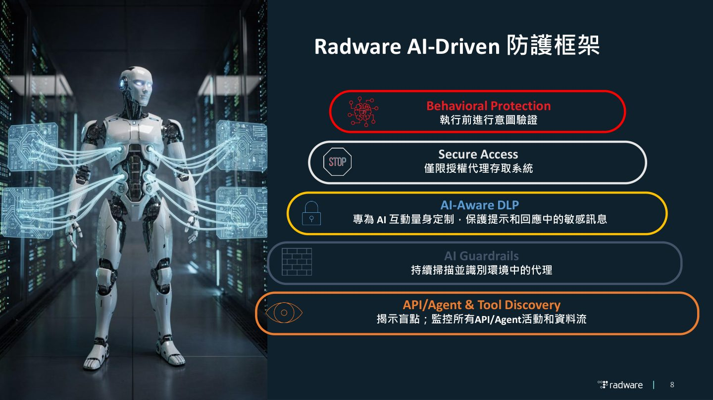
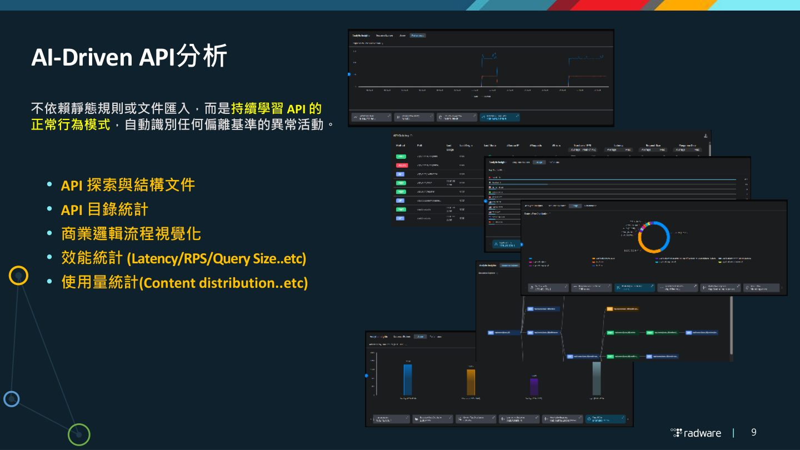
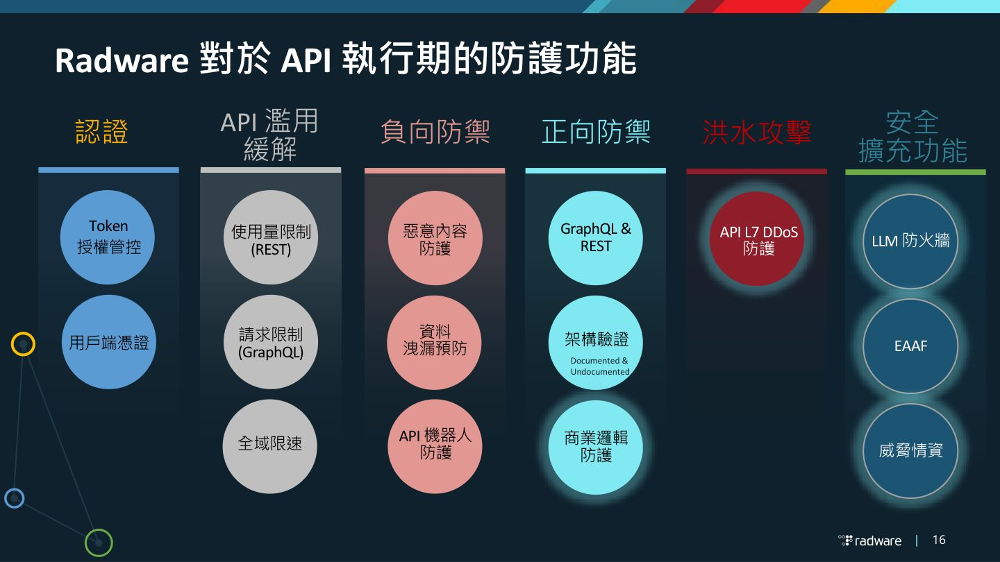
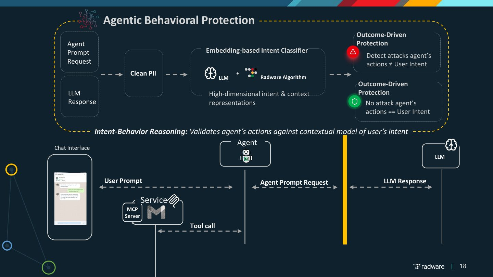

摘要
本場演講針對生成式 AI 浪潮下，企業面臨 AI Agent 與自動化工作流程（Machine Consumers）自主呼叫 API 所引發的新興資安挑戰。核心痛點包含商業邏輯濫用、影子與殭屍 API/Agent 擴張、數據洩漏，以及傳統靜態規則無法有效辨識機器流量。對此，Radware 提出以 Behavioral AI Engine 為核心的 AI-Driven 多層防護框架，整合了 Agentic Behavioral Protection 機制，透過意圖-行為推理（Intent-Behavior Reasoning）比對代理操作是否符合用戶意圖。同時，透過 Model Context Protocol (MCP) 進行工具控制與 Full Execution Risk Graph Mapping。實戰建議企業升級傳統 API Key 與 OAuth 至 AI 專屬的最小權限控制，並部署 AI Gateway 與 Guardrail 建立統一安全防護面，達成即時且不依賴靜態規則的動態威脅阻擋。
重點整理
- AI Assistant、AI Workflow、MCP Integration、Autonomous Agents 成為 API 的新型 Machine Consumer，且往往缺乏對應安全管控
- AI 同時是 API 的消費者（Copilot、Agent、Workflow、MCP）與服務提供者（LLM API、Chatbot API、AI Gateway、RAG Service），需要統一治理策略
- AI 帶來的新攻擊模式包含自動化偵察、智能化帳密攻擊、商業邏輯濫用、Agent 誤用與 Token 竊取重放等
- 防護需從 API/AI Agent Discovery、態勢管理、行為分析到即時防護與 Bot 感知能力全面建立
- Radware 提出以 Behavioral AI Engine 為核心的多層防護框架，涵蓋 Secure Access、AI Guardrails、AI-Aware DLP 與行為式防護
重點圖片／架構圖




AI 加入後 API 生態系的轉變
API 一直是企業行動應用、雲端服務、合作夥伴整合與人類使用者共同穿越的門戶。隨著 AI Assistant、AI Workflow、AI Agent 進入企業生態系，API Layer 本身沒有改變，但真正改變的是呼叫方的性質：企業 API 開始面對大量自動化、高頻率、自主決策的機器消費者。這些 Agent 會自主呼叫 API、存取敏感資料並執行關鍵操作，每一個動作都可能成為攻擊向量，安全防護必須開始保護 AI-to-API 的溝通。
AI 的雙重角色：Consumer 與 Service
企業需要理解 AI 在架構中同時扮演兩種角色。作為 AI Consumer，Copilot、AI Agent、Workflow、MCP 等系統以呼叫方身份使用企業 API 完成任務；作為 AI Service，企業則將 LLM API、Chatbot API、AI Gateway、RAG Service 等能力封裝對外提供。多數企業在轉型過程中兩種角色會同時存在，因此需要在 API 架構中統一規劃治理策略。
AI 帶來的新型態攻擊模式
AI 技術不只提升防禦能力，也正被攻擊者武器化，降低高複雜度攻擊的門檻。講題列出的威脅矩陣包含自動化偵察、AI 驅動的帳密濫用、能模擬人類行為的智能 Bot 攻擊、大規模 API Scraping，以及更進階的商業邏輯濫用、Agent 誤用授權執行危險操作、Token 竊取重放與 LLM 後端曝露等，顯示 AI 正大幅提升攻擊能力。
從 API 探測到安全實施
面對 AI 驅動的威脅，企業需要重新定義安全思維：先透過自動化的 API/AI Discovery 盤點所有 API 與 Agent（包含 Shadow 與 Zombie API），再建立持續的態勢管理、行為基準線分析與即時防護能力，並具備區分合法自動化與惡意 Bot 流量的能力。Radware 的 API Discovery 模組可從真實流量中自動識別端點、參數與商業邏輯流程，無需人工文件維護即可完成從探測到安全實施的閉環。
AI Agent 多層防護框架
針對 AI Agent 場景，Radware 提出涵蓋 Agent Tools Discovery、Agent Relationship Mapping、Agent Behavior Analytics 與 Rich Agent Metadata 的持續掃描與可視化能力，並搭配 API Security、LLM Guards（防範提示注入與越獄）、行為式資料外洩防護、MCP Tool Control 與安全事件報告。講題最後總結三大支柱：升級授權與行為異常偵測、建立 AI 流量可觀測性與儀表板，以及建立統一的 AI Gateway/Guardrail 作為所有 AI 服務的安全控管口。